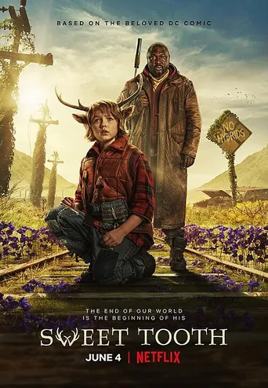

The genetics
Genetics enters through the hybrid children at the heart of the series and the laboratory behind its hero. Since the pandemic, babies are born with animal traits, deer, pig, fox, wolf or turtle, and nobody knows whether they are a cause or a consequence of the virus; the fear they provoke drives humans to hunt them, while others protect them in sanctuaries. Gus's story leads back to Fort Smith Labs in Colorado, where his father worked as a janitor and his mother, Birdie, as a geneticist; she gave Gus to Pubba to protect him. Meanwhile Dr. Singh's search for a cure is driven by love for his wife but carried out under the threat of the militia leader General Abbot. The sources do not explain how the hybrids or the virus arose, so the role of genetic research in the story is only partly documented here. The series, praised for its gentle tone, centres on kindness towards those who are different.
How genetics is portrayed
- Overall portrayal of genetics
- mixed Sympathetic scientists (Birdie, Singh) are set against a militia that coerces research and hunts hybrids; with thin sources on the lab's role, this rating is tentative.
- Outcome of the genetic intervention
- mixed The sources say little about the outcome of the genetic work: the laboratory is linked to Gus, a loved and loving child, while the pandemic era brings death and the persecution of hybrids.
- Gertrude 'Birdie' Miller
- hero Aim: not stated (not applicable). A geneticist at Fort Smith Labs and Gus's mother, she gives him to Pubba so he will be safe from those who would hunt him; the series presents her sympathetically, but the sources do not say what her genetic work was for (the lab's type is not stated).
- Dr. Aditya Singh
- ambivalent Aim: personal, benevolent (positive). He searches for a cure for the Sick to save his infected wife, a sympathetic aim, but works under the hybrid-hunting militia leader General Abbot, who had the previous researcher killed.
- General Douglas Abbot and the Last Men
- villain Aim: power, military (negative). The paramilitary leader hunts hybrids and forces the cure research on, poisoning Dr. Bell when she refuses to continue; he is a villain.
The story
Ten years after 'the Great Crumble', the collapse caused by a viral pandemic known as the Sick, babies born part human and part animal have appeared, and many people, unsure whether these hybrids caused the virus, fear and hunt them. Gus, a half-deer boy raised in hiding in Yellowstone by his father, Pubba, sets out after Pubba's death to find his mother in Colorado, protected by Tommy Jepperd, a former football player and reformed hybrid hunter. Their journey crosses other stories: Dr. Aditya Singh searches for a cure to save his infected wife under pressure from General Abbot, leader of the hybrid-hunting militia the Last Men, who has Singh's predecessor, Dr. Gladys Bell, poisoned; Bear leads an Animal Army protecting hybrids; and Aimee Eden runs a sanctuary for them. Gus learns that Pubba was a janitor at Fort Smith Labs and finally meets Birdie, a geneticist from the lab, who turns out to be his mother and had entrusted him to Pubba to keep him safe.